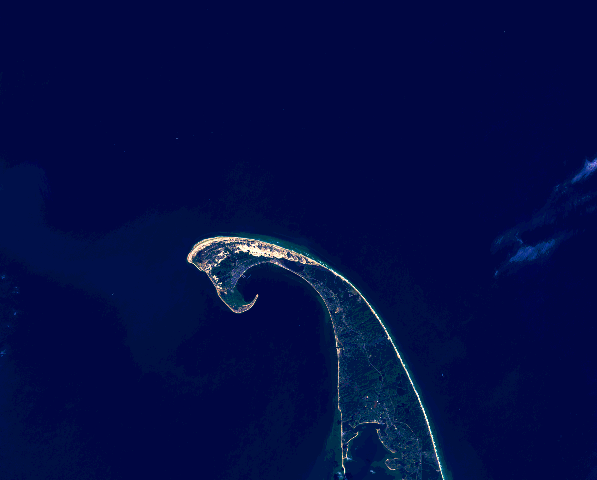
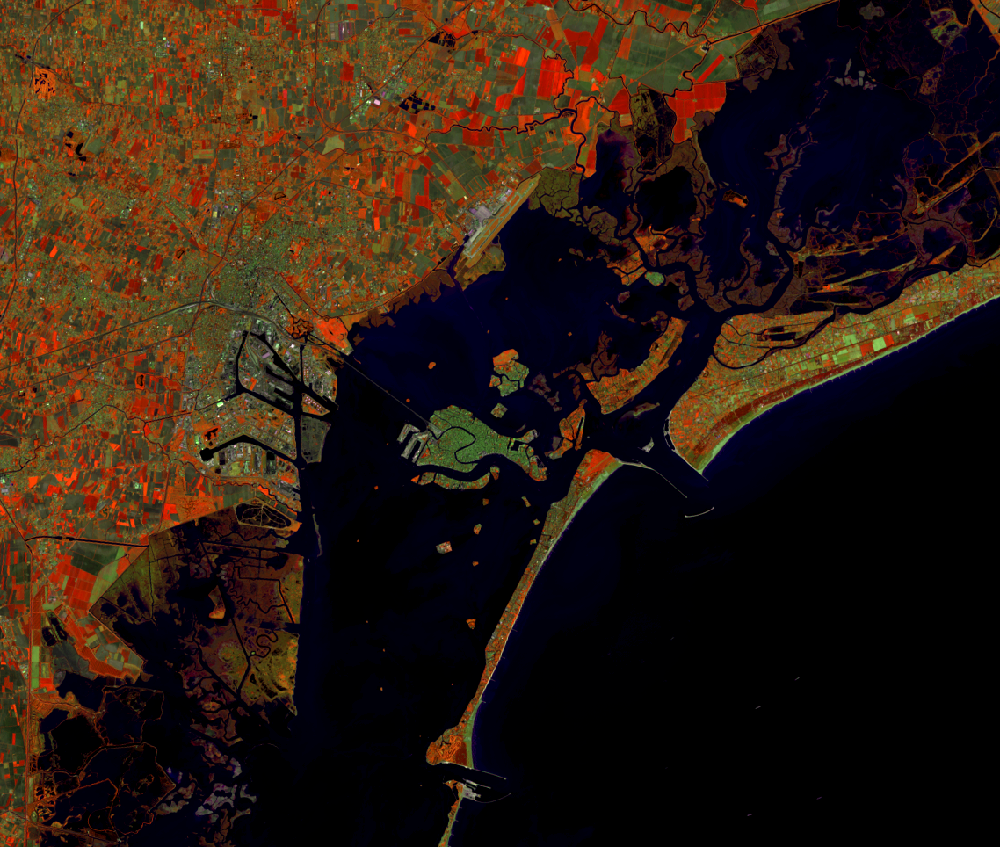

Earth Images
I recently figured out how to make true and false color images in GIMP using Landsat data and I've had a lot of fun creating my own images of places I have traveled to lived. I really appreciate the way the images blur the line between data and a little bit of art.
Provincetown, MA. True color composite (432). Landsat 8 OLI; October 8, 2015.
The very tip of Cape Cod, MA can be seen in this image in true color. The red, green, and blue bands are used to show what the area looks like in the visible spectral range.
Venice, Italy. False color composite (564). Landsat 8 OLI; April 19, 2015.
This band combination uses the NIR, SWIR, and Red bands. Vegetation shows as shades of browns with darker colors indicating a higher soil moisture content, seen in the upper right and lower left corners of the image. Urban areas appear grey, seen on the island of Venice proper in the center of the image.
 Sofia, Bulgaria. False color composite (652). Landsat 8 OLI; August 14, 2014.
Sofia, Bulgaria. False color composite (652). Landsat 8 OLI; August 14, 2014.
This band combination uses the NIR, SWIR, and Blue bands. It is known for highlighting agriculture throughout a scene. Sofia, Bulgaria looks dark brown/purple in the center of the image and the patterned agriculture that surrounds the city is shown in lighter shades of brown and green.